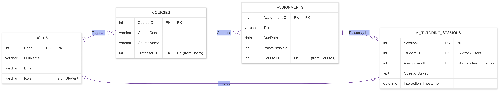

Creator details, logical data model, and repository links.
EduPulse AI is a next-generation academic companion designed to bridge the gap between static Learning Management Systems (LMS) and active, AI-driven student engagement. Our primary goal is to empower students at the University of South Florida by transforming raw syllabus data into an interactive, personalized learning journey.
Modern analytics coursework covering topics like Deep Learning, Big Data, and Advanced SQL requires more than just a document repository. EduPulse acts as a force multiplier for the student, offering a predictive lens into their academic performance while providing a safety-aligned AI tutor to navigate complex technical concepts.
Data Scientist with over 5 years of experience specializing in Python, SQL, and Azure ML. I focus on leveraging AI-driven decision-making and Generative AI to deliver actionable business impact.
The diagram below outlines the database structure required for the EduPulse AI application. It defines four key entities (Users, Courses, Assignments, and AITutoringSessions) and explicitly labels the Primary Keys (PK) and Foreign Keys (FK) that facilitate data integrity.
This model supports two essential 1:N relationships: A Course can host multiple Assignments, and each Assignment can generate numerous AI Tutoring Sessions as students interact with the AI helper.

Access the source code and version control history for this prototype.
View GitHub Repository